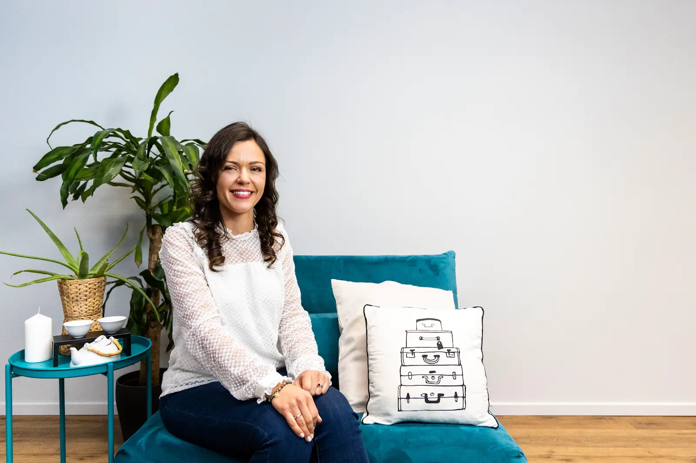
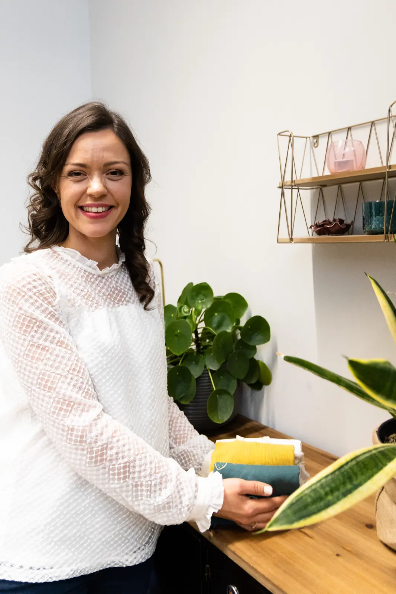
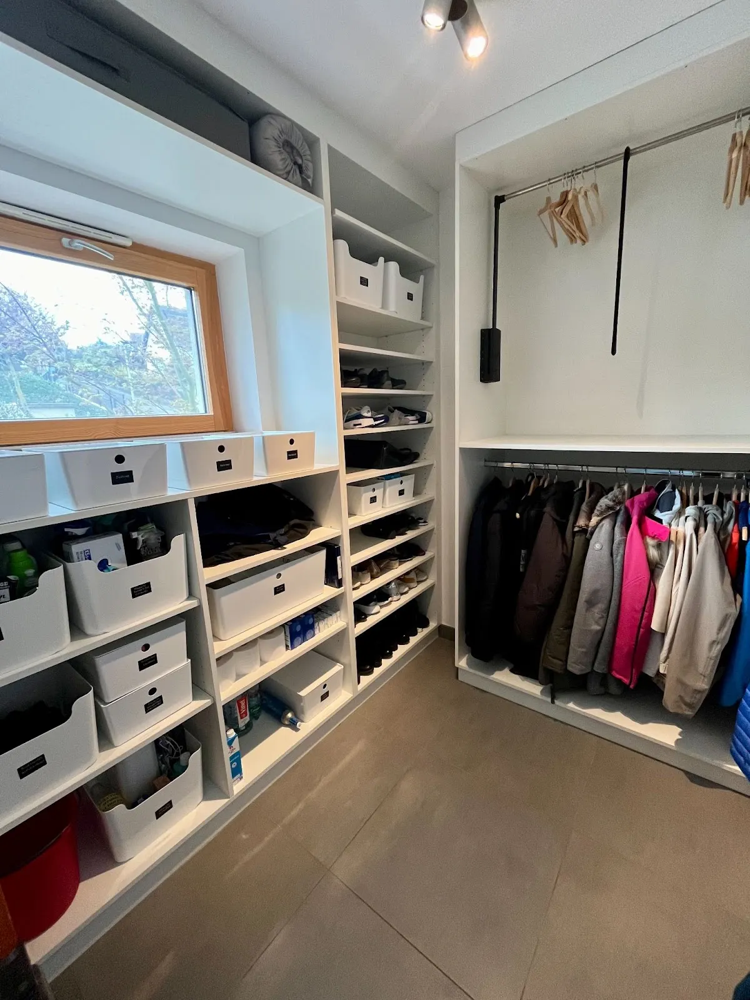

Le rangement au service
de votre bien-être !
Céline Knobloch, Home Organiser dans le Haut-Rhin

Home organiser
J'aide les personnes qui ont envie de trier, ranger, désencombrer leur maison et organiser leur lieu de vie.
Tout au long du processus de rangement, j'accompagne, soutiens, conseille et encourage. En tant que coach en rangement, je guide mes clients vers une organisation qui LEUR convient et qui est maintenable dans la durée.
En savoir plus
Revenir à l'essentiel
Être coach en rangement, c'est proposer un ensemble de méthodes de tri et d'organisation de la maison. Né il y a une vingtaine d'années dans les pays anglo-saxons, le home organising gagne à être popularisé grâce aux bienfaits qu'il apporte.
Parce que désencombrer sa maison et alléger son quotidien permet de revenir à l'essentiel, en toute simplicité, et de se faire du bien !
Découvrez les bienfaitsPourquoi faire appel à une coach en rangement ?
Combien de fois vous êtes-vous dit que ce week-end, vous vous y mettiez ? Combien de fois avez-vous entrepris des sessions rangement mais finalement, malgré tous vos efforts, le bazar est rapidement revenu ?
Le désordre pèse
Par manque de temps, de motivation ou d'énergie, le désordre prend le dessus dans votre maison et vos placards. Une habitation qui ne correspond pas à ce que l'on souhaite génère du stress, pour vous et vos proches.
Des résultats durables
En faisant appel à mes compétences de professionnelle de l'organisation, vous mettez toutes les chances de votre côté pour atteindre vos objectifs et obtenir des résultats immédiats et durables.
Douceur & bienveillance
Forte de mon expérience passée en tant qu'infirmière, c'est avec douceur et bienveillance que je vous accompagnerai dans la transformation de votre intérieur.
Pour une maison agréable, désencombrée, sereine
Mon sens de l'écoute et mes qualités relationnelles me permettent de vous aider à lever certains blocages psychologiques pour que vous puissiez retrouver une maison agréable où vous vous sentez bien ! Je vous accompagne avec les valeurs qui font le cœur de mon métier : respect, écoute et authenticité. Pour que votre maison soit agréable, désencombrée et sereine.
Comment ça se passe ?
Faire connaissance
Dans un premier temps, nous faisons connaissance par email ou téléphone et nous convenons ensemble d'une date pour la visite diagnostic.
Cette visite se passe à votre domicile et dure environ 1 heure. Faire appel à une professionnelle du rangement demande parfois du courage : je mets un point d'honneur à cette première rencontre, qui reste avant tout humaine.
Envisager ensemble de trier, ranger, optimiser
Ensemble, nous discutons de vos besoins et de vos attentes. Cette visite me permet de voir la/les pièce(s) concernée(s) et de cibler au mieux ma future mission.
Je vous explique mes méthodes de travail et je réponds à vos questions pour que vous puissiez aborder cette transformation en toute sérénité. Je vous prépare ensuite un devis.
Désencombrer : mes astuces et conseils
Le grand jour : j'arrive pour la mission à domicile. Ensemble, nous trions, désencombrons, rangeons et optimisons vos espaces. Vous avez le verdict final sur ce que vous gardez.
Je vous transmets mes astuces et mes conseils pour maintenir ce rangement. Après la mission, je reprends de vos nouvelles pour m'assurer que tout se passe bien.
Ils m'ont fait confiance
Prêt(e) pour une maison plus sereine ?
Parlons de votre projet, sans engagement. Le premier échange se fait par email ou téléphone, en toute simplicité.